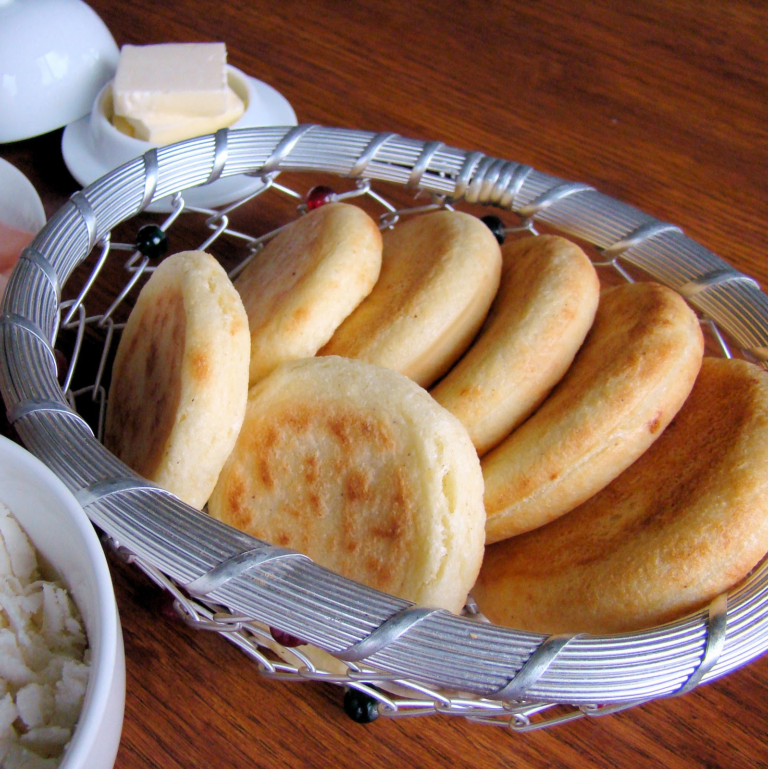

Venezuelan Arepas

Description
Arepas are cornmeal cakes that originated hundreds of years ago in a region that now makes up Colombia, Venezuela, and Panama. Traditionally, they were cooked on a pan called a budare. But they can also be grilled, baked, or fried.
Venezuelan arepas tend to be smaller and thicker, while Colombian arepas tend to be sweeter, thinner, and stuffed with cheese. Our version more closely resembles Venezuelan arepas. You can find more traditional recipes for Venezuelan arepas here and Colombian arepas here.
Ingredients
- 2 ½ cups lukewarm water
- 1 teaspoon salt
- 2 cups pre-cooked white corn meal (such as P.A.N.®)
- ¼ cup vegetable oil, or as needed
Steps
- Stir water and salt together in a bowl. Gradually stir corn meal into water with your fingers until mixture forms a soft, moist, malleable dough.
- Divide dough into 8 golf ball-size balls and pat each one into a patty about 3/8-inch thick.
- Heat oil in a skillet over medium heat until shimmering. Working in batches, cook corn patties in hot oil until golden brown, 4 to 5 minutes per side. Transfer cooked arepas to a paper towel-lined plate to drain until cool enough to handle.
- Slice halfway through each cake horizontally with a thin serrated knife to form a pita-like pocket.